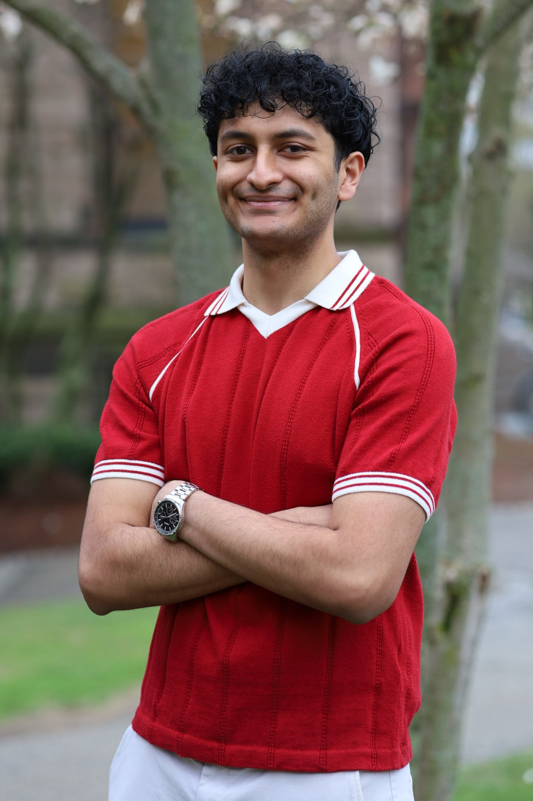

About Me
I am a rising senior at Brown University studying Artificial Intelligence in Health Informatics. I seek to leverage data to its fullest potential to improve human health, whether that means helping patients, physicians, or healthcare systems.
- Python AI/ML
PyTorch (+ Lightning, Geometric), Scikit-learn, Tensorflow, HuggingFace (Transformers, Datasets) - Data Wrangling & Visualization
SQL, NumPy, Unix, Matplotlib, Seaborn, spaCy, Julia - Biostatistics
Stata, SPSS, R - Cheminformatics
RDKit, Biopandas - Developer Tools
GitHub, VS Code, WandB, Docker, Jupyter Notebook - Web Development
HTML, CSS, JavaScript - Medical Ontologies
ICD, OMOP, SNOMED, UMLS - Languages
English, Spanish, Gujarati - Miscellaneous
Vocal Music (A Cappella & Hindustani Classical), Beatboxing, Photography
- Multimodal Learning
Integration of image, video, and sequence data for prediction/inference - Self-Supervised Learning
MoCo, world models, clinical foundation models, latent space prediction - Real-Time Data Streams
Streaming inference from continuous physiological waveform & video data - Graph Representations
Knowledge Graphs, Graph Neural Networks - Natural Language Processing
Text mining, information extraction, and knowledge discovery - Learning Health Systems
Data for one patient informs care of the next, Charles Friedman - Patient Care
Building longitudinal relationships through vulnerability, narrative medicine - In-Silico Drug Design
AI for drug discovery, repurposing, and development - Innovation
SaMD, Wearables for public health & preventative care
- Brown University
Artificial Intelligence in Health Informatics, ScB.
2023-2027 - Abington Heights High School
2019-2023
- Deep Learning, SSL, NLP
MAE, MoCo, ViTs, MLPs, CNNs, RNNs (LSTM/GRU), Transformers, REINFORCE, Diffusion - Computational Biology
MCMC, Haplotype phasing, HMMs, AlphaFold, LD, GWAS - Health Informatics
JuliaLang, OMOP CDM, HL7 FHIR, Evaluation Methods, Sociotechnical systems - Physiology (w/ Lab)
Circulatory, Renal, GI, Somatic Motor,Pathophysiology - Biochemistry
Metabolic Pathways, Regulation, Protein Structure, Visualization - Chemistry (w/ Lab)
Organic Chemistry (I & II), Inorganic Chemistry, Lab Techniques (NMR, GC-MS, TLC) - Mathematics
Calculus-Based Statistics, Linear Algebra, Biostatistics, Decision Theory, Mechanics - Computational Theory
Discrete Math, Data Structures & Algorithms, Time Complexity - Humanities
Medical Anthropology, Creative Nonfiction, Academic Essay-Writing
- Presidential Volunteer Service Award (PVSA)
2025, 2020-2022 - Sigma Xi Associate Membership
2022-
- CITI Program
Expires 2028: Conflicts of Interest
Expires 2027: HSP, Good Clinical Practice, Data or Specimens Only Research, Lifespan IRB Membership HIPAA Annual Renewal - Coursera
Mar 2024: Generative AI: Impact, Considerations, and Ethical Issues (IBM) - Biostatistics - Catalyst Medical Consulting
Jun 2023: Advanced Catalyst Workshop
- Python AI/ML
PyTorch (+ Lightning, Geometric), Scikit-learn, Tensorflow, HuggingFace (Transformers, Datasets) - Data Wrangling & Visualization
SQL, NumPy, Unix, Matplotlib, Seaborn, spaCy, Julia - Biostatistics
Stata, SPSS, R - Cheminformatics
RDKit, Biopandas - Developer Tools
GitHub, VS Code, WandB, Docker, Jupyter Notebook - Web Development
HTML, CSS, JavaScript - Medical Ontologies
ICD, OMOP, SNOMED, UMLS - Languages
English, Spanish, Gujarati - Miscellaneous
Vocal Music (A Cappella & Hindustani Classical), Beatboxing, Photography
- Multimodal Learning
Integration of image, video, and sequence data for prediction/inference - Self-Supervised Learning
MoCo, world models, clinical foundation models, latent space prediction - Real-Time Data Streams
Streaming inference from continuous physiological waveform & video data - Graph Representations
Knowledge Graphs, Graph Neural Networks - Natural Language Processing
Text mining, information extraction, and knowledge discovery - Learning Health Systems
Data for one patient informs care of the next, Charles Friedman - Patient Care
Building longitudinal relationships through vulnerability, narrative medicine - In-Silico Drug Design
AI for drug discovery, repurposing, and development - Innovation
SaMD, Wearables for public health & preventative care
- Brown University
Artificial Intelligence in Health Informatics, ScB.
2023-2027 - Abington Heights High School
2019-2023
- Deep Learning, SSL, NLP
MAE, MoCo, ViTs, MLPs, CNNs, RNNs (LSTM/GRU), Transformers, REINFORCE, Diffusion - Computational Biology
MCMC, Haplotype phasing, HMMs, AlphaFold, LD, GWAS - Health Informatics
JuliaLang, OMOP CDM, HL7 FHIR, Evaluation Methods, Sociotechnical systems - Physiology (w/ Lab)
Circulatory, Renal, GI, Somatic Motor, Pathophysiology - Biochemistry
Metabolic Pathways, Regulation, Protein Structure, Visualization - Chemistry (w/ Lab)
Organic Chemistry (I & II), Inorganic Chemistry, Lab Techniques (NMR, GC-MS, TLC) - Mathematics
Calculus-Based Statistics, Linear Algebra, Biostatistics, Decision Theory, Mechanics - Computational Theory
Discrete Math, Data Structures & Algorithms, Computer Systems, PAC Learning, Time Complexity - Humanities
Medical Anthropology, Creative Nonfiction, Academic Essay-Writing
- Presidential Volunteer Service Award (PVSA)
2025, 2020-2022 - Sigma Xi Associate Membership
2022-
- CITI Program
Expires 2028: Conflicts of Interest
Expires 2027: HSP, Good Clinical Practice, Data or Specimens Only Research, Lifespan IRB Membership
Expires 2026: HIPAA Annual Renewal - Coursera
Mar 2024: Generative AI: Impact, Considerations, and Ethical Issues (IBM) - Biostatistics - Catalyst Medical Consulting
Jun 2023: Advanced Catalyst Workshop